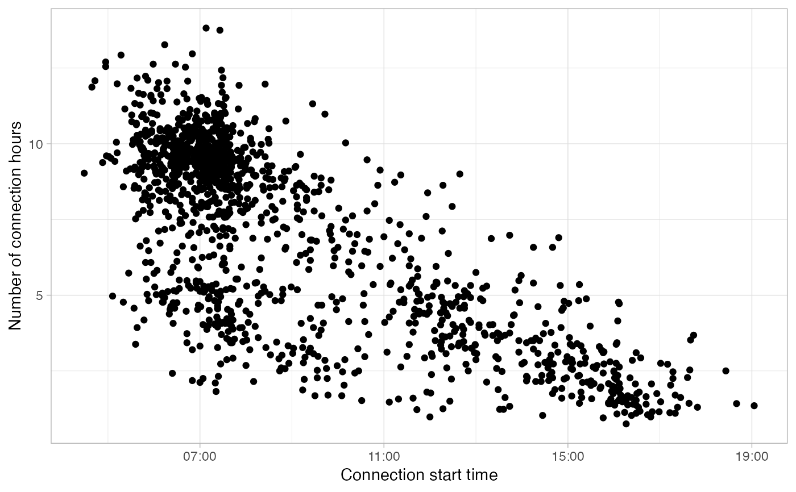

Plot all bi-variable GMM (clusters) with the colors corresponding to the assigned user profile. This shows which clusters correspond to which user profile, and the proportion of every user profile.
Source:R/modelling.R
plot_model_clusters.RdPlot all bi-variable GMM (clusters) with the colors corresponding to the assigned user profile. This shows which clusters correspond to which user profile, and the proportion of every user profile.
Arguments
- subsets_clustering
list with clustering results of each subset (direct output from function
cluser_sessions())- clusters_definition
list of tibbles with clusters definitions (direct output from function
define_clusters()) of each sub-set- profiles_ratios
tibble with columns
profileandratio- log
logical, whether to transform
ConnectionStartDateTimeandConnectionHoursvariables to natural logarithmic scale (base =exp(1)).
Examples
library(dplyr)
# Select working day sessions (`Timecycle == 1`) that
# disconnect the same day (`Disconnection == 1`)
sessions_day <- evprof::california_ev_sessions_profiles %>%
filter(Timecycle == "Workday") %>%
sample_frac(0.05)
plot_points(sessions_day, start = 3)

# Identify two clusters
sessions_clusters <- cluster_sessions(
sessions_day, k=2, seed = 1234, log = TRUE
)
#> fitting ...
#>
|
| | 0%
|
|===== | 7%
|
|========= | 13%
|
|============== | 20%
|
|=================== | 27%
|
|======================= | 33%
|
|============================ | 40%
|
|================================= | 47%
|
|===================================== | 53%
|
|========================================== | 60%
|
|=============================================== | 67%
|
|=================================================== | 73%
|
|======================================================== | 80%
|
|============================================================= | 87%
|
|================================================================= | 93%
|
|======================================================================| 100%
# Plot the clusters found
plot_bivarGMM(
sessions = sessions_clusters$sessions,
models = sessions_clusters$models,
log = TRUE, start = 3
)
# Define the clusters with user profile interpretations
clusters_definitions <- define_clusters(
models = sessions_clusters$models,
interpretations = c(
"Connections during all day (high variability)",
"Connections during working hours"#'
),
profile_names = c("Visitors", "Workers"),
log = TRUE
)
# Create a table with the connection GMM parameters
connection_models <- get_connection_models(
subsets_clustering = list(sessions_clusters),
clusters_definition = list(clusters_definitions)
)
# Plot all bi-variable GMM (clusters) with the colors corresponding
# to their assigned user profile
plot_model_clusters(
subsets_clustering = list(sessions_clusters),
clusters_definition = list(clusters_definitions),
profiles_ratios = connection_models[c("profile", "ratio")]
)